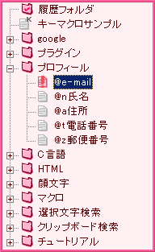

とりあえず使ってみたい、でも難しそう。大丈夫です。基本的な使い方はすごく簡単です。まずは簡単な操作に慣れて、徐々にCharu3を使い込んでみてください。きっとテキスト入力のスタイルが変わると思いますよ。
 インストール方法
インストール方法
Charu3はWindows98、Me、NT4.0、2000、XP上で動作します。Windows95では動作しないので注意して下さい。
インストーラーは付属しませんので、解凍後に適当な場所(C:\Program Files\など)にフォルダごとコピーして、必要に応じてスタートアップにショートカットを作ってください。これだけでOKです。難しい設定は特にありません。
 アンインストール方法
アンインストール方法
レジストリは全く触りませんので、必要が無くなったらフォルダごと削除してください。その際、作っておいたショートカットも忘れずに消して下さい。これでアンインストールは終わりです。
まずCharu3の基本的な使い方を説明します。定型文の貼り付け方と、簡単な設定の解説をします。
 ポップアップ方法
ポップアップ方法
ホットキー(初期設定はAlt+Xです)を押すとキャレット位置にポップアップが現れます。ESCを押すか、アクティブが外れるか、もう一度ホットキーを押すかするとポップアップは消えます。もう一度ホットキーを押すとまた現れます。
 貼り付け方法
貼り付け方法
ポップアップが表示されたら貼り付けたい定型文を、ツリーから選びます。決まったらEnterキーで決定します。マウスのダブルクリックでも決定できます。すると、ポップアップを呼んだときにあったキャレットの位置に定型文が貼り付けられます。
 設定の仕方
設定の仕方
Charu3は多くの使い方に対応するために細かい設定を行うことが可能です。が、普通に使う分には全ての設定を理解する必要はありません。なので大雑把に設定の意味を解説してみたいと思います。設定はタスクトレイアイコンを右クリックすると出てくるメニューに入っています。詳しい設定方法はこちらです。
 一般設定
一般設定
ここは普通に使う分には変える必要は無いと思います。XPでトレイアイコンのツールチップを固定にしたいとか、Wordを使っててWordが落ちる、なんて問題が無ければそのままでOKです。
 ストックモード
ストックモード
Charu3の機能の中でも特徴的なストックモードの動作を設定できます。これも普通に使う分には変更しなくて良いと思います。
 ポップアップ
ポップアップ
ポップアップの動作やホットキーの設定をします。ホットキーは好みに合わせて変えると、自分の手に馴染んだ使い方が出来ますので場合によっては変更してください。また、マウスカーソルがデスクトップの隅に触れたらポップアップを出す設定や、ポップアップを出す位置などの設定も出来ます。クイックアクセスを発展させたクイック確定の設定もここでします。
 ビジュアル
ビジュアル
ここではポップアップの見た目を設定できます。フォントの種類、大きさ、ポップアップで使うアイコンファイル、色の設定、半透明の設定が可能です。好みによって変えてください。
 キー設定
キー設定
設定の中で最も意味のわからない部分だと思います。普通は使いませんが、貼り付けが上手くいかない時はこのキー設定をする必要が出てきます。